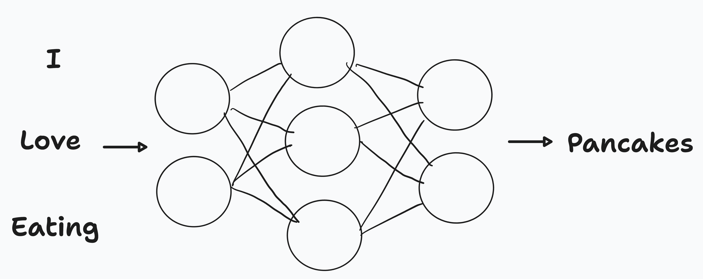

class: center, middle # Building Text-Based Applications with the ChatGPT API & LangChain ### Lucas Soares #### 07-05-2024 --- # Quick 'Interactivity Notes' - The presentation will be organized into the following structure: -- - __Presentation Block__ -- - __Notebook Demo__ -- - __Quick Q&A + Summary__ -- - __Optional Exercise__ During Q&A (for those that don't have questions and want to try something out) -- - Repeat --- class: center, middle # Large Language Models --- # Large Language Models Large Language Models Predict the Next Word  --- # Applications of Large Language Models - Conversational ChatBots <img src="../notebooks/assets-resources/chatgpt-demo.png" alt="ChatGPT Demo" style="width: 600px;"/> --- # Applications of Large Language Models - Search Engines <img src="../notebooks/assets-resources/google-icon.png" alt="Google Icon" style="width: 600px;"/> --- # Applications of Large Language Models - Translation <img src="../notebooks/assets-resources/google-translate.png" alt="LLM Translation" style="width: 600px;"/> -- - And so much more from Q&A over PDFs to personalized tutoring. --- class: center, middle # Behind all of these applications is a powerful architecture: __Transformers__ --- <div style="display: flex; justify-content: center;"> </div> --- # Transformers <img src="../notebooks/assets-resources/transformers-architecture.png" alt="Transformers Architecture" style="width: 800px;"/> <p style="font-size: 14px; margin-top: 10px;"> <sup>[1]</sup><a href="https://www.youtube.com/watch?v=qaWMOYf4ri8&t=1959s">What are Transformers and How do They Work? By Serrano Academy</a> </p> --- # Benefits of Large Language Models - Multi-task Capability - LLMs find applications in content generation, question answering, translation, tutoring, and personal assistants. -- - Fine-tuning - LLMs can usually be fine tuned with a relatively small amount of data, making them adaptable to a wide range of tasks. -- - Scalability - LLMs demonstrate excellent scalability to very large capacity networks and huge datasets. --- # Limitations and Ethical Considerations ## LLMs are far from perfect -- - __Knowledge Limit__: LLMs have a cutoff point for their knowledge. -- - __Understanding Limit__: LLMs do not understand text in the same way humans do. They don't have beliefs or desires; they simply predict what comes next based on their training. -- - __Misuse__: LLMs can hallucinate and produce false or harmful content -- - __Reproducibility__: Unpredictability of LLM behavior. Watkins 2023 -- - __Data Privacy and Bias__: Ethical considerations should extend to the acquisition of data for training additional models. Models may have biases; their use should be transparent and biases mitigated. Watkins 2023 --- class: center, middle <img src="../notebooks/assets-resources/panda-letters-app-demo.png" width="800px"> <h1> <span style="background-color: lightgreen"> Demo App - Panda Letters </span> </h1> --- # Q&A & Summary - __LLMs predict the next word__ and generate human-like text. - __LLMs power diverse applications__ including conversational chatbots, search engines, and translation services, demonstrating their versatility in handling various language tasks. - __Transformer architecture__ processes text in parallel, utilizing mechanisms like tokenization, embedding, positional encoding, and attention to understand context and generate relevant outputs. - __Advantages of LLMs__: LLMs are multi-taskers capable of content generation, question answering, and more, with the ability to be fine-tuned for specific tasks and scale effectively to handle large datasets and complex models. - __Benefits and Limitations__: Despite their benefits (multi-tasking, fine-tuning etc..), LLMs have limitations, including a fixed knowledge base, lack of true understanding, potential for misuse, and ethical concerns around data privacy and inherent biases. - <span style="color: grey">Optional Exercise</span> - <span style="color: grey">Set up your OpenAI API key and prepare for the practical demos</span> --- class: center, middle # Break --- class: center, middle # Introduction to the ChatGPT API --- # Introduction to the ChatGPT API - The ChatGPT API allows you to use OpenAI's models to generate human-like text based on the input you provide. -- - Basic structure of calling the API: ```python from openai import OpenAI client = OpenAI() def get_response(prompt_question): response = client.chat.completions.create( model="gpt-3.5-turbo-0125", messages=[{"role": "system", "content": "You are a helpful research and programming assistant"}, {"role": "user", "content": prompt_question}] ) return response.choices[0].message.content ``` -- - Required parameters: `model`, `messages` <p style="font-size: 14px; margin-top: 10px;"> <sup>[2]</sup><a href="https://platform.openai.com/docs/introduction">OpenAI Docs</a> </p> --- class: center, middle <h1> <span style="background-color: lightgreen"> Notebook Demo 1.0 - Intro to ChatGPT API & Prompt Basics </span> </h1> --- # Prompt Basics --- # Prompt Basics <img src="../notebooks/assets-resources/prompt-basics/prompt-basics.002.jpeg" width="800px" style="margin-left: -20px; margin-top: -40px;"> --- # Prompt Basics <img src="../notebooks/assets-resources/prompt-basics/prompt-basics.003.jpeg" width="800px" style="margin-left: -20px; margin-top: -40px;"> --- # A Prompt Constrains the Space of Potential Outputs <div style="display: flex; justify-content: center;"> </div> --- # Prompt Basics ## Components of the prompt <img src="../notebooks/assets-resources/prompt-basics/prompt-basics.004.jpeg" width="800px" style="margin-left: -20px; margin-top: -40px;"> --- # Prompt Basics ## Components of the prompt: <span style="color: green">instruction</span> <img src="../notebooks/assets-resources/prompt-basics/prompt-basics.005.jpeg" width="800px" style="margin-left: -20px; margin-top: -40px;"> --- # Prompt Basics ## Components of the prompt: <span style="color: green">instruction</span>, <span style="color: black">context</span> <img src="../notebooks/assets-resources/prompt-basics/prompt-basics.006.jpeg" width="800px" style="margin-left: -20px; margin-top: -40px;"> --- # Prompt Basics ## Components of the prompt: <span style="color: green">instruction</span>, <span style="color: black">context</span> <span style="color: #0d8eb9">input data</span> --- # Prompt Basics ## Components of the prompt: <span style="color: green">instruction</span>, <span style="color: black">context</span> <span style="color: #0d8eb9">input data</span> , <span style="color: red">output indicator</span> <img src="../notebooks/assets-resources/prompt-basics/prompt-basics.008.jpeg" width="800px" style="margin-left: -20px; margin-top: -40px;"> --- # Q&A & Summary - __Prompts__ are the inputs to LLMs__ - __Prompts__ allow users to __guide the model's responses__ and generate specific outputs. - __Components of a prompt:__ instruction, context, input data, and output indicator. - __ChatGPT API: __ programatic access to GPT models by OpenAI - __ChatGPT API: __required parameters: `model`, `messages` - <span style="color: grey"> __Optional Exercise During Q&A__ </span> ``` Create a prompt that summarizes a piece of text in a format/structure of your choice. ``` --- class: center, middle # Break --- class: center, middle # Break --- --- --- --- <img src="../notebooks/assets-resources/fine-tuning-slides/fine-tuning-slides.004.jpeg" alt="Fine Tuning 4" style="width: 800px;"/> --- --- <img src="../notebooks/assets-resources/fine-tuning-slides/fine-tuning-slides.006.jpeg" alt="Fine Tuning 6" style="width: 800px;"/> --- <p style="font-size: 14px; margin-top: 10px;"> <sup>[4]</sup> <a href="https://platform.openai.com/docs/guides/fine-tuning">OpenAI's Fine Tuning Docs</a> </p> --- --- <img src="../notebooks/assets-resources/fine-tuning-slides/fine-tuning-slides.009.jpeg" alt="Fine Tuning 9" style="width: 800px;"/> --- --- <img src="../notebooks/assets-resources/fine-tuning-slides/fine-tuning-slides.011.jpeg" alt="Fine Tuning 11" style="width: 800px;"/> --- <img src="../notebooks/assets-resources/fine-tuning-slides/fine-tuning-slides.012.jpeg" alt="Fine Tuning 12" style="width: 800px;"/> --- <img src="../notebooks/assets-resources/fine-tuning-slides/fine-tuning-slides.013.jpeg" alt="Fine Tuning 13" style="width: 800px;"/> --- --- --- <img src="../notebooks/assets-resources/fine-tuning-slides/fine-tuning-slides.016.jpeg" alt="Fine Tuning 16" style="width: 800px;"/> --- <img src="../notebooks/assets-resources/fine-tuning-slides/fine-tuning-slides.017.jpeg" alt="Fine Tuning 17" style="width: 800px;"/> --- --- --- <img src="../notebooks/assets-resources/fine-tuning-slides/fine-tuning-slides.020.jpeg" alt="Fine Tuning 20" style="width: 800px;"/> --- --- --- <img src="../notebooks/assets-resources/fine-tuning-slides/fine-tuning-slides.023.jpeg" alt="Fine Tuning 23" style="width: 800px;"/> --- <img src="../notebooks/assets-resources/fine-tuning-slides/fine-tuning-slides.024.jpeg" alt="Fine Tuning 24" style="width: 800px;"/> --- <img src="../notebooks/assets-resources/fine-tuning-slides/fine-tuning-slides.025.jpeg" alt="Fine Tuning 25" style="width: 800px;"/> --- --- class: center, middle <h1> <span style="background-color: lightgreen"> Notebook Demo 3.0 - Fine Tuning ChatGPT API </span> </h1> --- <div style="display: flex; justify-content: center;"> </div> <p style="font-size: 14px; margin-top: 10px;"> <sup>[5]</sup><a href="https://python.langchain.com/docs/get_started/introduction">LangChain Docs</a> </p> --- # LangChain Components -- ## Models -- - Abstractions over the LLM APIs like the ChatGPT API -- ```python from langchain_openai import ChatOpenAI chat_model = ChatOpenAI(model="gpt-3.5-turbo-0125") output = chat_model.invoke("I am teaching a live-training\ about LLMs!") print(output.content) ``` <p style="font-size: 14px; margin-top: 10px;"> <sup>[5]</sup><a href="https://python.langchain.com/docs/get_started/introduction">LangChain Docs</a> </p> --- # LangChain Components -- ## Prompt Templates -- - Abstractions over standard prompts to LLMs -- ```python from langchain_core.prompts import ChatPromptTemplate prompt = ChatPromptTemplate.from_template( """Show me 5 examples of this concept: {concept}""" ) prompt.format(concept="animal") # Output # 'Human: Show me 5 examples of this concept: animal' ``` <p style="font-size: 14px; margin-top: 10px;"> <sup>[5]</sup><a href="https://python.langchain.com/docs/get_started/introduction">LangChain Docs</a> </p> ??? When I say Abstraction I mean for example that you can treat pieces of text in a regular prompt like a variable you can dynamically change without modifying the rest of the prompt. --- # LangChain Components -- ## Output Parsers -- - Translates raw output from LLM to a workable format -- ```python from langchain_core.output_parsers import StrOutputParser output_parser = StrOutputParser() ``` <p style="font-size: 14px; margin-top: 10px;"> <sup>[5]</sup><a href="https://python.langchain.com/docs/get_started/introduction">LangChain Docs</a> </p> --- # Chains in LangChain -- ## Chain = Model + Prompt + Output Parser -- - Chains are the building blocks in LangChain -- - They are used to compose abstractions that go from simple to complex components -- ```python llm = ChatOpenAI(model="gpt-3.5-turbo-0125") prompt = ChatPromptTemplate.from_template(""" output_parser = StrOutputParser() Write 5 concepts that are fundamental to learn about {topic}. """) chain = prompt | llm | output_parser chain.invoke({"topic": "Artificial Neural Networks"}) ``` <p style="font-size: 14px; margin-top: 10px;"> <sup>[5]</sup><a href="https://python.langchain.com/docs/get_started/introduction">LangChain Docs</a> </p> --- # LCEL - LangChain Expression Language ## Composing Chains with LCEL -- - LCEL is a powerful, declarative language designed to streamline the composition of complex chains in the LangChain framework. -- - Pipe syntax -- ```python chain = prompt | llm | output_parser ``` -- - Allows you to build complex chain pipelines with a simple standard interface <p style="font-size: 14px; margin-top: 10px;"> <sup>[5]</sup><a href="https://python.langchain.com/docs/get_started/introduction">LangChain Docs</a> </p> --- # LCEL - Runnables - To facilitate creation of custom chains, LangChain has implemented a __"Runnable" protocol__. -- - The standard interface includes `stream`, `invoke`, and `batch` methods. Async methods are also available -- - The input type and output type vary by component: <img src="../notebooks/assets-resources/components_input_output.png" alt="Components Input Output" style="width: 600px;"/> <p style="font-size: 14px; margin-top: 10px;"> <sup>[5]</sup><a href="https://python.langchain.com/docs/get_started/introduction">LangChain Docs</a> </p> ??? - `stream`: Stream back chunks of the response - `invoke`: Call the chain on an input - `batch`: Call the chain on a list of inputs --- class: center, middle <h1> <span style="background-color: lightgreen"> Notebook Demo 4.0 - Intro to LangChain </span> </h1> --- # Q&A & Summary - Fine tuning ChatGPT API: process of training a pre-trained model on a specific task or dataset. - Fine tuning steps for the ChatGPT API: prepare the data, train the model, use the model. - __LLMs can predict the next word in a sequence__. ("I Like eating...? ;P ") - __Chains__ are the building blocks in LangChain, composed of Models, Prompt Templates, and Output Parsers. - __LCEL__ is a declarative language that users the Unix pipe symbol to build complex chain pipelines with a simple standard interface. - <span style="color: grey">Optional Exercise During Q&A</span> ``` Create a simple chain that can answer questions about a specific topic. ``` ??? <span style="color: red">Maybe add a live chat summary?</span> --- class: center, middle # Break 5 minutes --- # LangChain for Chat Over Documents -- - RAG = __R__etrieval __A__ugmented __G__eneration -- - It's about connecting LLMs to documents like PDFs, Text files, HTML, etc. -- - How do we get around the context length limitations of LLMs? -- - Quick Answer is __Embeddings__! --- # LangChain for Chat Over Documents - Embeddings are vectorized representations of text <img src="../notebooks/assets-resources/embeddings.png" alt="Embeddings" style="width: 600px;"/> --- # LangChain for Chat Over Documents <img src="../notebooks/assets-resources/embeddings-similarity.png" alt="Embeddings Similarity" style="width: 600px;"/> --- # LangChain for Chat Over Documents <img src="../notebooks/assets-resources/embeddings-similarity2.png" alt="Embeddings Similarity" style="width: 600px;"/> - Embeddings capture content and meaning --- # LangChain for Chat Over Documents <img src="../notebooks/assets-resources/vectordb.png" alt="Embeddings Similarity" style="width: 600px;"/> - Embeddings capture content and meaning - Vector DBs -- - How to build RAG systems with LangChain? --- # LangChain for Chat Over Documents -- <img src="../notebooks/assets-resources/rag-langchain.png" alt="RAG LangChain" style="width: 600px;"/> -- - Load -- - Split -- - Embed -- - Store --- # LangChain for Chat Over Documents <img src="../notebooks/assets-resources/rag-langchain-retrieval.png" alt="RAG LangChain" style="width: 600px;"/> -- - Retrieval Piepeline -- - Input Question -- - Retrieve Relevant Documents -- - LLM uses the prompt question + retrieved data to produce a final answer --- # LangChain for Chat Over Documents - Sample Code ```python from langchain import hub from langchain_community.vectorstores import Chroma from langchain_openai import ChatOpenAI, OpenAIEmbeddings from langchain.document_loaders import PyPDFLoader from langchain.chains import RetrievalQA pdf_path = "path-to-pdf.pdf" loader = PyPDFLoader(pdf_path) # LOAD pdf_docs = loader.load_and_split() # SPLIT embeddings = OpenAIEmbeddings() # EMBED vectordb = Chroma.from_documents(pdf_docs, embedding=embeddings) # STORE retriever = vectordb.as_retriever() llm = ChatOpenAI(model="gpt-3.5-turbo-0125") pdf_qa = RetrievalQA.from_llm(llm=llm, retriever=retriever) # RETRIEVE pdf_qa.invoke("What is this paper about?") # ANSWER ``` --- class: center, middle <h1> <span style="background-color: lightgreen"> Notebook Demo 4.1 - Q&A with LangChain </span> </h1> --- # Q&A & Summary - __RAG__ = __R__etrieval __A__ugmented __G__eneration - __RAG__ is about connecting LLMs to documents like PDFs, Text files, HTML, etc. - __Embeddings__ are vectorized representations of text that capture content and meaning. - __Vector DBs__ are used to store and retrieve embeddings. - __RAG__ systems with LangChain are built using a pipeline that includes loading, splitting, embedding, and storing documents. - <span style="color: red"> __Optional Exercise During Q&A__ </span> ``` Create a simple RAG system with LangChain that can answer questions about pdfs or csvs. ``` ??? <span style="color: red">Maybe add a live chat summary?</span> --- class: center, middle # Break --- class: center, middle <h1> <span style="background-color: lightgreen"> Practical Session </span> </h1> --- # References 1. [What are Transformers and How do They Work? By Serrano Academy](https://www.youtube.com/watch?v=qaWMOYf4ri8&t=1959s) 2. [OpenAI Docs](https://platform.openai.com/docs/introduction) 3. [OpenAI's Prompt Engineering Guide](https://platform.openai.com/docs/guides/prompt-engineering) 4. [OpenAI's Fine Tuning Docs](https://platform.openai.com/docs/guides/fine-tuning) 5. [LangChain Docs](https://python.langchain.com/docs/get_started/introduction) 6. [ReACT Paper](https://arxiv.org/abs/2210.03629) ---